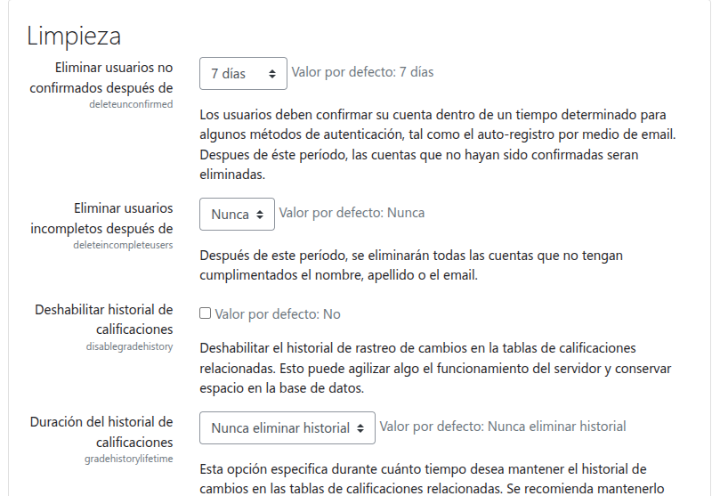

Tab 1
Tarea 3.5. Seguridad y Mantenimiento Avanzado ¶
FICHA TÉCNICA DE LA ACTIVIDAD ¶ |
||
|---|---|---|
| Unidad Didáctica | Unidad 3. Instalación, configuración y utilización de sistemas de gestión de aprendizaje a distancia | |
| Nombre de la Tarea | Tarea 3.5. Seguridad y Mantenimiento Avanzado | |
| Resultado de Aprendizaje (RA) | ||
| Criterios de Evaluación (CE) | ||
| Fecha Publicación/Entrega | Date | Date |
MÉTODO DE ENTREGA Y FORMATO ¶ |
||
| Documento |
|
|
1. DESCRIPCIÓN GENERAL. OBJETIVOS ¶
La tarea final se centra en la seguridad proactiva, las actualizaciones y el monitoreo avanzado del entorno de servidor, asegurando que la plataforma Moodle se mantenga estable y protegida.
2. CONSIDERACIONES PREVIAS ¶
Partiendo de la plataforma Moodle instalada en la tarea 3.1., se deben de realizar los siguientes pasos, se tendrán que ir realizando capturas de pantalla (OBLIGATORIO que se os identifique). Copiar los distintos apartados, las explicaciones de este documento y los enunciados, para luego contestar las preguntas e incluir las capturas solicitadas. Se entregará un documento PDF con los requisitos establecidos para este tipo de documentos.
3. CONTENIDO DE LA TAREA ¶
Actualizaciones:
Investigue y documente los pasos clave del proceso de actualización de la versión de Moodle (ej. de la versión actual instalada a la siguiente).
Revisiones de Seguridad:
Revise y documente la configuración de seguridad de las "Políticas de seguridad del sitio" (Administración del sitio / Opciones avanzadas / Seguridad).
Configure el filtro de limpieza de texto HTML y explique brevemente su función para prevenir inyecciones de código.
Incluya una captura del informe de seguridad de Moodle.
Limpieza de Datos:
Buscar y realizar una captura de la configuración de limpieza de nuestra plataforma (Administración del sitio / Opciones avanzadas / Servidor)

Monitorización y Entorno:
Acceda a la herramienta de "Entorno" (Environment) de Moodle.
Verifique que todos los requisitos de PHP están cumplidos (los checks deben ser de color verde).
Incluya una captura de la página de Entorno de Moodle.
Informes y Registros:
Acceda a Administración del sitio / Informes / Vista general del rendimiento
Verifica que todos están OK con una captura
Tareas Programadas (Cron):
Investiga sobre la importancia del cron en el mantenimiento y funcionamiento de Moodle (ej. envío de notificaciones, procesamiento de tareas).
4. CALIFICACIÓN ¶
⚠️ IMPORTANTE: El retraso en el plazo de entrega a través de la plataforma, la entrega del documento en formatos editables no permitidos (como .docx), capturas con identificación del alumno/a o la omisión de los enlaces de las fuentes documentales utilizadas penalizará gravemente la nota o invalidará la práctica.
| Apartado / Criterio | Muy Bien (100%) | Notable (75%) | Bien (50%) | Mejorable (30%) | Insuficiente (0%) | Peso |
|---|---|---|---|---|---|---|
| Contenido Técnico / Funcionalidad | Configuración completa y sin errores, demostrando la correcta implementación de la tarea. | Completo con errores menores/mínimos que no impiden el funcionamiento general de la plataforma. | Mayoría correcto, con algunos errores notables o partes que no funcionan, pero la base de la instalación es correcta. | Errores notables o faltan partes importantes de la instalación que impiden su funcionamiento. | No realizado o no cumple con los requisitos funcionales fundamentales. | 40% |
| Memoria y Documentación | Se incluyen todas las explicaciones, capturas solicitadas (identificadas claramente) y las respuestas a todas las preguntas de forma clara, concisa y completa, siguiendo la secuencia de pasos del documento. | Incluye la mayoría de las explicaciones, capturas y respuestas, siguiendo los pasos correctamente, con omisiones menores que no afectan la comprensión global de la tarea. | Pasos incompletos, faltan capturas importantes, o varias preguntas clave quedan sin responder/explicar. La documentación es insuficiente para el 40%. | Faltan partes importantes de la memoria, documentación pobre o la mayoría de preguntas/capturas/explicaciones están ausentes o son incorrectas. | No se entrega documentación, la información es inútil o no se ajusta a lo solicitado. | 50% |
| Presentación | Documento limpio, profesional y creativo. Sigue el formato (PDF) y cumple rigurosamente con todas las indicaciones de identificación. | Documento limpio, sigue el formato (PDF) y cumple las indicaciones de identificación solicitadas. | Desorganizado o sin formato adecuado (ej. no es PDF o le falta formato básico). | Desorganizado y difícil de leer. | Muy pobre o no trabajada. | 10% |
Tab 2
Planificación de Tareas - Módulos de Administración de Moodle
Este documento detalla la secuencia de tareas prácticas diseñadas para la unidad didáctica de administración de la plataforma Moodle, continuando tras la Tarea 3.1: Instalación de Moodle. Cada tarea se centra en un aspecto esencial para el dominio de la administración del sitio.
A continuación, se presenta la estructura de las tareas, incluyendo una ficha técnica base que el alumno deberá completar al inicio de cada entrega, siguiendo el formato del documento inicial.
Tarea 3.2. Configuración Inicial y Personalización del Sitio ¶
| Apartado | Detalle |
| Unidad Didáctica | [Número y Título] |
| Nombre de la Tarea | Configuración Inicial y Personalización del Sitio |
| Resultado de Aprendizaje (RA) | [Ej: RA2. Describe los elementos de...] |
| Criterios de Evaluación (CE) | [Ej: CE a, b, f...] |
| Fecha Publicación/Entrega | Date |
| Documento | Documento [PDF] (Tarea3.2.pdf) con explicaciones y capturas de pantalla. Formato adecuado |
1. Descripción General de la Tarea. Objetivos ¶
En esta actividad, el alumno deberá establecer los cimientos de la plataforma Moodle configurando los ajustes básicos del sitio y personalizando su apariencia para adaptarla a la imagen institucional.
2. Contenido de la Tarea ¶
Configuración General (1,5 puntos): Acceda al área de administración. Configure el nombre completo y corto del sitio, la zona horaria y el idioma predeterminado. Realice una captura de la pantalla de ajustes principales.
Gestión de Apariencia (2,5 puntos):
Instale y seleccione un tema diferente al predeterminado.
Personalice la página de inicio añadiendo al menos dos bloques (ej. HTML o Calendario) y edite el contenido estático de la página principal.
Incluya una captura del sitio con el nuevo tema y los bloques en la página de inicio.
Correo Electrónico (1,0 punto): Configure el sistema de correo saliente (SMTP) de Moodle. Explique brevemente los pasos realizados y por qué es fundamental esta configuración.
Modo Mantenimiento (1,5 puntos):
Ponga el sitio en modo mantenimiento e incluya un mensaje de notificación personalizado visible a los no administradores.
Incluya una captura del mensaje de mantenimiento visto por un usuario sin privilegios.
Desactive el modo mantenimiento.
Preguntas (0,5 puntos): ¿Cuál es la ruta exacta para acceder a la configuración del idioma predeterminado? ¿Qué son los bloques y cómo afectan a la usabilidad del sitio?
Tarea 3.3. Gestión de Usuarios, Roles y Permisos ¶
| Apartado | Detalle |
| Unidad Didáctica | [Número y Título] |
| Nombre de la Tarea | Gestión de Usuarios, Roles y Permisos |
| Resultado de Aprendizaje (RA) | [Ej: RA2. Describe los elementos de...] |
| Criterios de Evaluación (CE) | [Ej: CE a, b, f...] |
| Fecha Publicación/Entrega | Date |
| Documento | Documento [PDF] (Tarea3.3.pdf) con explicaciones y capturas de pantalla. Formato adecuado |
1. Descripción General de la Tarea. Objetivos ¶
El objetivo de esta actividad es que el alumno adquiera un dominio completo sobre la creación y gestión de identidades digitales dentro de Moodle, así como la correcta asignación de roles y permisos.
2. Contenido de la Tarea ¶
Creación y Autenticación (1,5 puntos):
Cree manualmente dos cuentas de usuario de prueba: Person (Profesor) y Person (Estudiante). Incluya capturas de la creación de las cuentas.
Configure el método de autenticación por "Auto-registro basado en email" (Email-based self-registration) y explique cómo afecta esto al flujo de nuevos usuarios.
Roles Personalizados (2,5 puntos):
Cree un nuevo rol llamado "Tutor de Apoyo" basado en el rol de "Profesor sin permiso de edición" (Non-editing teacher).
Modifique los permisos del nuevo rol para que NO pueda ver los informes de actividad, pero SÍ pueda ocultar actividades.
Asigne el rol de "Tutor de Apoyo" a uno de los usuarios creados. Incluya una captura de la tabla de definición de permisos del nuevo rol.
Matriculaciones (2,0 puntos):
Cree un curso de prueba.
Matricule manualmente a los usuarios creados en el curso.
Configure el método de "Auto-matriculación (Estudiante)" con una clave de acceso.
Habilite el "Acceso de invitado" al curso. Incluya una breve explicación de la diferencia entre los tres métodos.
Políticas de Usuarios (1,0 punto): Configure la política de contraseñas para que requiera un mínimo de 10 caracteres alfanuméricos (incluyendo mayúsculas, minúsculas, números y símbolos).
Tarea 3.4. Administración y Diseño de Cursos ¶
| Apartado | Detalle |
| Unidad Didáctica | [Número y Título] |
| Nombre de la Tarea | Administración y Diseño de Cursos |
| Resultado de Aprendizaje (RA) | [Ej: RA2. Describe los elementos de...] |
| Criterios de Evaluación (CE) | [Ej: CE a, b, f...] |
| Fecha Publicación/Entrega | Date |
| Documento | Documento [PDF] (Tarea3.4.pdf) con explicaciones y capturas de pantalla. Formato adecuado |
1. Descripción General de la Tarea. Objetivos ¶
El alumno deberá dominar la estructura organizativa del catálogo de cursos de Moodle (categorías) y la configuración avanzada de un curso, incluyendo su formato y seguimiento de finalización.
2. Contenido de la Tarea ¶
Categorías de Cursos (1,5 puntos):
Cree una estructura jerárquica con al menos tres niveles de profundidad (ej. Ciclos Formativos -> Grado Superior -> ASIR).
Mueva el curso de prueba creado en la Tarea 3.3 a la categoría de nivel más bajo. Incluya una captura del árbol de categorías.
Creación de Cursos y Ajustes (2,5 puntos):
Cree un nuevo curso llamado "Administración Moodle Avanzada".
Configure su formato como "Formato Semanal" con 5 secciones y visibilidad "Ocultar".
Establezca las fechas de inicio y fin del curso para un período de 3 meses a partir de hoy.
Establezca el límite de archivos subidos a 5MB.
Finalización de Curso y Actividad (2,0 puntos):
En el curso "Administración Moodle Avanzada", configure la finalización de curso para que se complete solo cuando un estudiante obtenga una calificación de aprobado.
Añada una actividad de "Tarea" y configure su finalización automática basada en la entrega del estudiante.
Explique la importancia de la finalización de actividad y curso.
Bloques y Formatos (1,0 punto):
Dentro del curso, cambie el formato de "Semanal" a "Formato de Rejilla" (si el plugin está disponible) o "Formato de Temas" y explique la diferencia con el formato anterior.
Añada y configure el bloque de "Progreso de finalización" (Completion Progress) al curso.
Tarea 3.5. Módulos, Plugins y Rendimiento ¶
| Apartado | Detalle |
| Unidad Didáctica | [Número y Título] |
| Nombre de la Tarea | Módulos, Plugins y Rendimiento |
| Resultado de Aprendizaje (RA) | [Ej: RA2. Describe los elementos de...] |
| Criterios de Evaluación (CE) | [Ej: CE a, b, f...] |
| Fecha Publicación/Entrega | Date |
| Documento | Documento [PDF] (Tarea3.5.pdf) con explicaciones y capturas de pantalla. Formato adecuado |
1. Descripción General de la Tarea. Objetivos ¶
Esta tarea cubre la ampliación de funcionalidad de Moodle mediante plugins, el seguimiento de la plataforma a través de informes y la gestión de la información del curso mediante copias de seguridad.
2. Contenido de la Tarea ¶
Gestión de Plugins (2,0 puntos):
Investigue y descargue un plugin de actividad o bloque no esencial (ej. el bloque "Mi Progreso" o la actividad "H5P").
Instale el plugin en la plataforma (mediante la interfaz web o de forma manual).
Incluya una captura del plugin instalado y activo.
Informes y Registros (1,5 puntos):
Acceda a los informes del sitio (ej. "Rendimiento" o "Uso de Almacenamiento").
Genere un informe de "Registros de actividad" (logs) para el curso "Administración Moodle Avanzada" para los últimos 7 días, filtrando por el usuario Person.
Explique qué información clave proporciona la herramienta de informes para un administrador.
Copia de Seguridad y Restauración (2,5 puntos):
Realice una copia de seguridad completa del curso "Administración Moodle Avanzada", incluyendo usuarios matriculados. Nombre el archivo de copia de seguridad (ej. Backup_Avanzada_Date.mbz).
Cree una nueva categoría temporal.
Restaure la copia de seguridad realizada en la categoría temporal, como un nuevo curso.
Incluya capturas del proceso de copia de seguridad y restauración.
Tareas Programadas (Cron) (1,0 punto):
Verifique el estado del cron de Moodle a través del área de administración.
Explique con sus palabras la importancia del cron en el mantenimiento y funcionamiento de Moodle (ej. envío de notificaciones, procesamiento de tareas).
Tarea 3.6. Seguridad y Mantenimiento Avanzado ¶
| Apartado | Detalle |
| Unidad Didáctica | [Número y Título] |
| Nombre de la Tarea | Seguridad y Mantenimiento Avanzado |
| Resultado de Aprendizaje (RA) | [Ej: RA2. Describe los elementos de...] |
| Criterios de Evaluación (CE) | [Ej: CE a, b, f...] |
| Fecha Publicación/Entrega | Date |
| Documento | Documento [PDF] (Tarea3.6.pdf) con explicaciones y capturas de pantalla. Formato adecuado |
1. Descripción General de la Tarea. Objetivos ¶
La tarea final se centra en la seguridad proactiva, las actualizaciones y el monitoreo avanzado del entorno de servidor, asegurando que la plataforma Moodle se mantenga estable y protegida.
2. Contenido de la Tarea ¶
Actualizaciones (2,0 puntos):
Investigue y documente los pasos clave del proceso de actualización de la versión de Moodle (ej. de la versión actual instalada a la siguiente).
No es necesario realizar la actualización, pero debe simular los pasos teóricos y mencionar la ruta del fichero de configuración (config.php) y la importancia del modo mantenimiento en el proceso.
Incluya un diagrama de flujo simple o una lista numerada del proceso de actualización.
Revisiones de Seguridad (2,0 puntos):
Revise y documente la configuración de seguridad de las "Políticas de seguridad del sitio" (Site security settings).
Configure el filtro de limpieza de texto HTML y explique brevemente su función para prevenir inyecciones de código.
Incluya una captura del informe de seguridad de Moodle.
Limpieza de Datos (1,0 punto):
Practique la eliminación de la categoría temporal y del curso de prueba creado en la Tarea 3.4.
Elimine las cuentas de usuario de prueba creadas en la Tarea 3.3. Incluya capturas que demuestren la eliminación.
Monitorización y Entorno (2,0 puntos):
Acceda a la herramienta de "Entorno" (Environment) de Moodle.
Verifique que todos los requisitos de PHP están cumplidos (los checks deben ser de color verde).
Identifique y explique el significado de un requisito de PHP que esté marcado como "Recomendado" o "Necesario".
Incluya una captura de la página de Entorno de Moodle.
Criterios de Calificación (Aplicables a todas las Tareas) ¶
| Apartado / Criterio | Muy Bien (100%) | Notable (75%) | Bien (50%) | Mejorable (30%) | Insuficiente (0%) | Peso |
|---|---|---|---|---|---|---|
| Contenido Técnico / Funcionalidad | Instalación y configuración completas y sin errores (Moodle, MySQL, permisos, etc.), demostrando la correcta implementación de la tarea. | Completo con errores menores/mínimos que no impiden el funcionamiento general de la plataforma. | Mayoría correcto, con algunos errores notables o partes que no funcionan, pero la base de la instalación es correcta. | Errores notables o faltan partes importantes de la instalación que impiden su funcionamiento. | No realizado o no cumple con los requisitos funcionales fundamentales. | 50% |
| Memoria y Documentación | Se incluyen todas las explicaciones, capturas solicitadas (identificadas claramente) y las respuestas a todas las preguntas de forma clara, concisa y completa, siguiendo la secuencia de pasos del documento. | Incluye la mayoría de las explicaciones, capturas y respuestas, siguiendo los pasos correctamente, con omisiones menores que no afectan la comprensión global de la tarea. | Pasos incompletos, faltan capturas importantes, o varias preguntas clave quedan sin responder/explicar. La documentación es insuficiente para el 40%. | Faltan partes importantes de la memoria, documentación pobre o la mayoría de preguntas/capturas/explicaciones están ausentes o son incorrectas. | No se entrega documentación, la información es inútil o no se ajusta a lo solicitado. | 40% |
| Presentación | Documento limpio, profesional y creativo. Sigue el formato (PDF) y cumple rigurosamente con todas las indicaciones de identificación. | Documento limpio, sigue el formato (PDF) y cumple las indicaciones de identificación solicitadas. | Desorganizado o sin formato adecuado (ej. no es PDF o le falta formato básico). | Desorganizado y difícil de leer. | Muy pobre o no trabajada. | 10% |
IMPORTANTE: El retraso en la entrega, no cumplir los requisitos o la realización de forma inadecuada puede penalizar la calificación o anular la entrega.